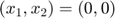
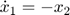
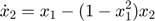
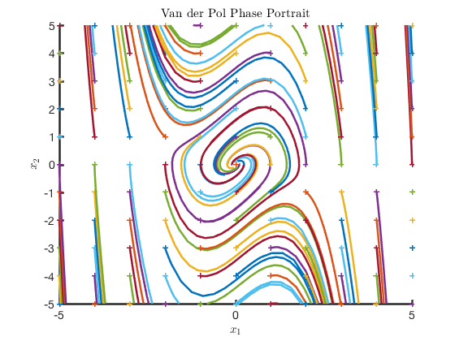
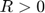
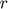

MAE 5803 - Homework #1 Problem #4
Tim Coon: 25, January 2017
Contents
- Consider the following second-order system
- a) Draw the phase portraits of the system about the equilibrium point . Be sure to include a sufficiently wide area of the state space to capture the possible limit cycle in the system.
- b) Is the limit cycle stable? Explain your answer.
- c) Determine the stability of the equilibrium point at the origin (be specific on the type of stability). Determine its region of attractrion if it is asymptotically stable.
clear; close all; clc;
Consider the following second-order system


a) Draw the phase portraits of the system about the equilibrium point . Be sure to include a sufficiently wide area of the state space to capture the possible limit cycle in the system.
tspan = [0 5]; figure(); hold on for x1 = -5:1:5 for x2 = -5:1:5 X0 = [x1; x2]; [t,X] = ode45(@P4stateEqn,tspan,X0,[]); h = plot(X(:,1),X(:,2)); c = get(h,'color'); plot(X0(1),X0(2),'+','color',c); end end axis([-5 5 -5 5]) xlabel('$x_1$') ylabel('$x_2$') title('Van der Pol Phase Portrait') hold off
b) Is the limit cycle stable? Explain your answer.
The limit cycle is stable because, for any , there exists at least one point within a ball of radius  about the origin where the solution tends toward the origin. Slotine, Definition 3.3
c) Determine the stability of the equilibrium point at the origin (be specific on the type of stability). Determine its region of attractrion if it is asymptotically stable.
Reference Slotine Definition 3.4. The equilibrium point at the origin is asymptotically stable because it is stable (see part b) and there does exist some ball of radius r (anywhere inside the limit cycle) for which any point starting inside this ball will tend toward teh equilibrium point at time increases. The domain of attraction is the ball that fits inside of the limit cycle.